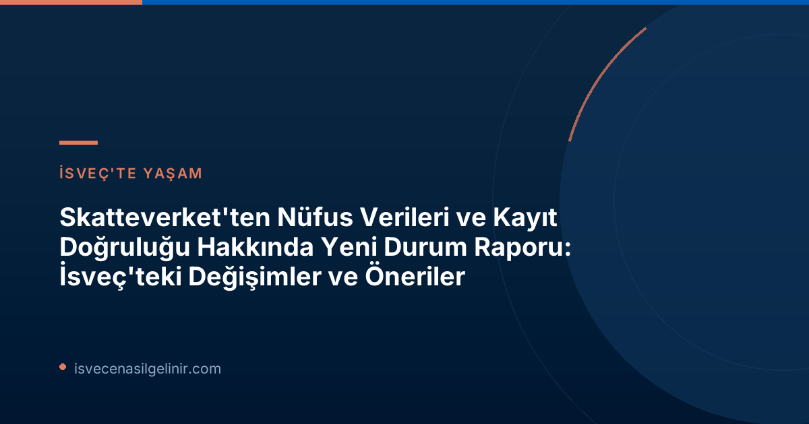

İsveç'in Güncel Nüfus Profili: Rakamlar ve Eğilimler
Skatteverket'in raporuna göre, 2025 yılı sonunda İsveç'te kayıtlı nüfus 10.605.529 kişiye ulaştı. Bu rakam, bir önceki yıla göre yaklaşık 18.000 kişilik bir artışı temsil ediyor. Ancak, nüfus hareketliliğinde dikkat çekici değişiklikler yaşandı:
2025 Sonunda İsveç Nüfus İstatistikleri
- Toplam Kayıtlı Nüfus: 10.605.529 kişi
- Yıllık Artış: Yaklaşık 18.000 kişi
- İsveç'e Taşınarak Kayıt Yaptıranlar: %24 azaldı
- Doğum Yoluyla Kayıt Yaptıranlar: Önceki yılki seviyede kaldı
- Hatalı Kayıtlı Kişi Sayısı Tahmini: %2-3
Raporda, İsveç'e taşınarak kayıt yaptıranların sayısında %24'lük bir düşüş gözlemlenirken, doğum yoluyla kayıt yaptıranların sayısının bir önceki yılla benzer seviyede kaldığı belirtiliyor. Bu durum, ülkenin demografik yapısındaki bazı değişimlere işaret ediyor.
Nüfus Kayıtlarındaki Hataların Boyutu ve Sosyal Etkileri
Skatteverket, İsveç nüfusunun büyük çoğunluğunun doğru şekilde kayıtlı olduğunu belirtse de, mevcut hataların toplum için ciddi sonuçlar doğurabileceğine dikkat çekiyor. Michael Högback, Skatteverket nüfus kayıt departmanı başkanı, hatalı kayıtların refah sistemlerinden haksız ödemelere, yanlış vergilendirmeye ve kimlik suiistimallerine yol açabileceğini ifade ediyor. Bu nedenle, çalışmaların daha da geliştirilmesi gerektiği vurgulanıyor.
Yanlış Beyanlar ve Adres Kayıtları
- En az 65.000 kişi İsveç'ten taşınmış olmasına rağmen hala kayıtlı görünüyor.
- En az 23.500 kişi gereklilikleri yerine getirmesine rağmen kayıtlı değil.
- Yaklaşık 96.000 ila 154.000 kişi yanlış adreslere kayıtlı durumda.
Kişisel Numarası veya Koordinasyon Numarası Olmayan Kişiler
Raporda ayrıca, İsveç'te kişisel numarası veya koordinasyon numarası olmadan yaşayan yaklaşık 110.000 ila 185.000 kişiden oluşan bir gruba da değiniliyor. Bu kişilerin bir kısmı yasal olarak ülkede bulunma hakkına sahipken, bir kısmı yasa dışı olarak ikamet ediyor veya bulunma durumu belirsizliğini koruyor:
- Bilinen İkametli ve Yasal Yolda Olanlar: 86.400 kişi
- Bilinen İkametli ancak Yasal Olmayanlar: 22.400 kişi
- İkameti Bilinmeyenler (Yasal veya Yasal Olmayan): Yaklaşık 30.000 kişi
Skatteverket'in Koordinasyon Numaralarına İlişkin Bulguları
Nüfus durumu raporu, koordinasyon numarası sahiplerini de kapsıyor. İsveç'te kalıcı olarak ikamet etmeyen kişilere verilen koordinasyon numaraları, ülkedeki çeşitli işlemler için kritik öneme sahip.
| Aktif Koordinasyon Numarası Sayısı (2025 Sonu) | Kimlik Doğrulama Seviyeleri | Kimliği Kanıtlanmış Kişi Oranı (2023) | Kimliği Kanıtlanmış Kişi Oranı (2025) |
|---|---|---|---|
| 477.113 | Kanıtlanmış, Muhtemel, Belirsiz | %12 | %45 |
Anders Klaar, Skatteverket'in durum raporu görev yöneticisi, kimliğini kanıtlayan kişi sayısındaki artışın olumlu olduğunu belirtmekle birlikte, tüm yetkili makamların bu bilgiyi sistemlerinde okuyamadığına dikkat çekiyor. Bu bilginin etkin bir şekilde kullanılması gerektiği vurgulanıyor. Ayrıca, koordinasyon numarasına sahip kişilerin İsveç'te yaşama ve çalışma haklarının açıkça belirtilmesi gerektiği, böylece yanlış anlamaların ve suiistimallerin önüne geçileceği öneriliyor. Kimlik belgesi, oturma izni veya vatandaşlık ile ilgili konularda bilgi almak için İsveç Vatandaşlık Testi sayfasını ziyaret edebilirsiniz.
Suçla Mücadele ve Kayıt Doğruluğu İçin Önerilen Önlemler
Skatteverket, nüfus kayıtlarındaki hataların yeterince azalmadığını ve daha fazla kontrol, teknik destek, kurumlar arası bilgi değişimi ve işbirliğine ihtiyaç olduğunu belirtiyor. Kurum, suç örgütleri tarafından kullanılan hatalı kimliklerin toplum için en büyük sonuçları doğurduğunu ifade ediyor. Michael Högback, biyometrik verilerin (yüz görüntüsü ve parmak izi gibi) kullanımının artırılmasının ve bu verilerin suçla mücadele eden makamlarla paylaşılmasının büyük fayda sağlayacağını vurguluyor.
Skatteverket'in Önemli Önlem ve Öneri Paketleri
- Biyometrik Veri Kullanımının Artırılması: Skatteverket, biyometrik verilerin (yüz görüntüsü, parmak izi gibi) kullanımını artırmalı, bu verileri kişinin yaşadığı sürece saklayabilmeli ve işbirliği yaptığı kurumlarla paylaşabilmelidir. Bu, hem kayıtlı kişiler hem de koordinasyon numarasına sahip kişiler için gereklidir.
- Koordinasyon Numaraları İçin Açık Bilgilendirme: Koordinasyon numarasına sahip bir kişinin İsveç'te yaşam ve çalışma hakkına ilişkin açık bilgiler sağlanmalı ve bu, toplumda yanlış anlamaları ve kötüye kullanımları azaltmak için duyurulmalıdır.
- Sistemlerin Adaptasyonu: Hükümet, koordinasyon numaralarını işleyen yetkili makamlara, ilgili bilgileri alabilmeleri için sistemlerini adapte etme görevi vermelidir.
- Kısa Süreli İzinlerde Koordinasyon Numarası: Kısa süreli izin başvurusunda bulunan kişilerin genellikle koordinasyon numarası ile kaydedilmesi gerekmektedir.
- Nüfus Kayıt Yasası'nın Gözden Geçirilmesi: Toplumun 35 yıl önceki yasa yürürlüğe girdiğinden bu yana büyük değişiklikler geçirdiği göz önünde bulundurularak, Nüfus Kayıt Yasası (Folkbokföringslagen) net, amaca uygun ve modern bir mevzuat oluşturmak amacıyla gözden geçirilmelidir.
Özellikle başka ülkelere taşınmasına rağmen İsveç'te hala kayıtlı görünen kişilerin oluşturduğu maliyet riski yüksek bir alan olduğu ve bu konunun denetimlerde öncelikli olduğu belirtiliyor.
Bu rapor, İsveç'in nüfus kayıt sistemlerini daha doğru, güvenli ve verimli hale getirme çabasının önemli bir parçasıdır. Atılacak adımlar, İsveç'in adil ve düzenli bir toplumsal yapıyı sürdürmesi için büyük önem taşıyor.
Referanslar
İsveç'te Güncel Gelişmeleri Takip Edin!
İsveç'teki göçmenlik, yaşam ve yasal süreçler hakkında en güncel ve doğru bilgilere ulaşmak için bizi takip edin. Sorularınız için bize ulaşmaktan çekinmeyin.